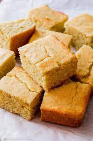

Golden Sweet Cornbread

Description
Cornbread is a real treat with chili, ribs, or barbecued chicken. You could even use this sweet, homemade cornbread to make stuffing for your Thanksgiving feast! This easy recipe is made from scratch with no mix. My mom made this for me as a child, and now it's my family's favorite. Serve with butter, jam, honey, or your favorite spread.
Ingredients
- 1 cup all-purpose flour
- 1 cup yellow cornmeal
- 2/3 cup white sugar
- 3 1/2 teaspoons baking powder
- 1 teaspoon salt
- 1 cup milk
- 1/3 cup vegetable oil
- 1 large egg
Steps
- Preheat oven to 400 degrees F (200 degrees C). Lightly grease a 9-inch round cake pan.
- Whisk flour, cornmeal, sugar, baking powder, and salt together in a large bowl. Add milk, vegetable oil, and egg; whisk until well combined. Pour batter into the prepared pan.
- Bake in the preheated oven until a toothpick inserted into the center of the pan comes out clean, 20 to 25 minutes.